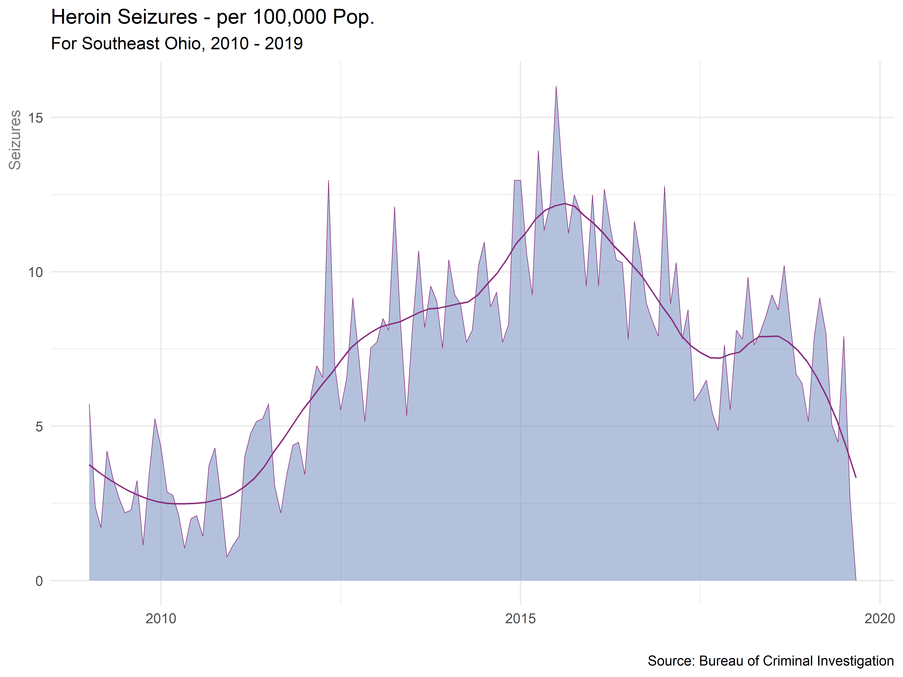

Heroin has been available in limited quantities throughout Ohio for decades. Up until the early years of the 21st century demand was constrained due to widespread perception of harm and prohibitive cost. The introduction of less expensive and highly potent black tar heroin from the Xalisco region of Mexico along with growing demand attributable to the prescription opioid epidemic, resulted in a dramatic increase in heroin trafficking.
The following figure shows heroin trafficking in Southeast Ohio rising steadily from the beginning of the study period through 2016, followed by a steep decline in seizures through the remainder of the reporting period. Overall declines in heroin seizures are widely attributed to the introduction of illicit fentanyl and fentanyl analogs throughout the region.
